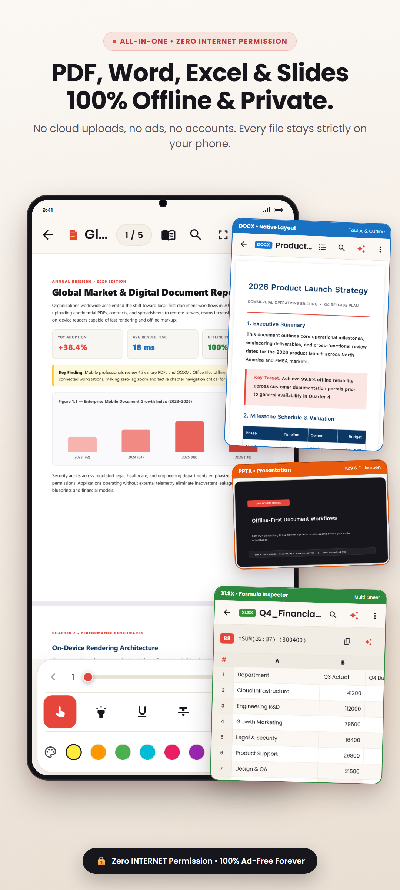
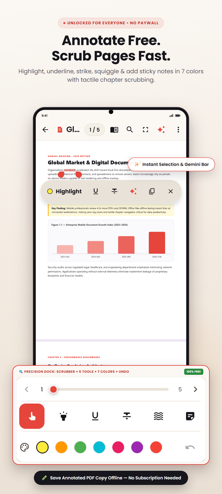
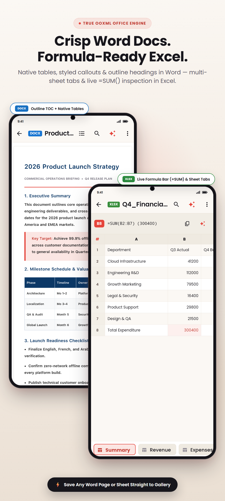
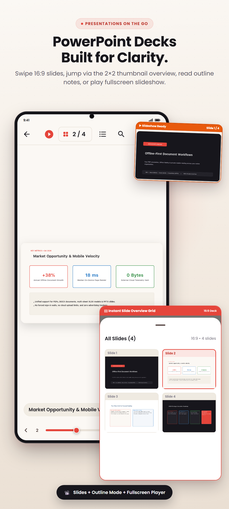
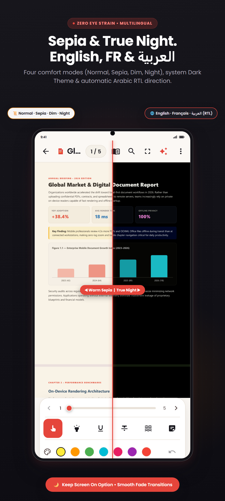
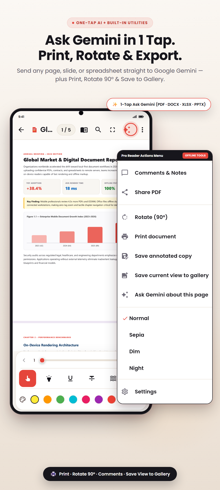

Dual-Screen Presenter Mode
Deliver presentations with clean audience projector output, speaker timer, upcoming slide previews, and zoomable notes.
A fast, clean document reader and presentation stage for Windows and Android. Open PDF, Word, Excel & PowerPoint files completely offline, command slides with dual-screen Presenter Mode and AI touchless hand gestures, read in multi-tab desktop mode, and annotate in 7 colors with zero paywalls.
Captured directly from Pagelit on Android and Windows desktop. One clean workspace for PDFs and Microsoft Office files.






Pagelit for Windows turns your PC into a state-of-the-art presentation deck and multi-tab document hub with native DirectML hardware acceleration and on-device computer vision.
Plug into any projector, TV, or external monitor. Your audience sees pristine, borderless full-screen slides, while your primary screen gives you the ultimate speaker command center:
No remote clicker or physical pointer? No problem. Pagelit leverages local ONNX runtime models (MoveNet & MediaPipe Hand Landmarks) to read natural gestures via your webcam from 2 to 3 meters away:
Read, annotate, and compare multiple documents side-by-side without desktop window clutter:
Free, open, standalone release · 64-bit portable & installer · Zero telemetry
Built for speed, focus, and privacy. Everything you need to read, present, and mark up PDF and Office documents — nothing you don't.
Deliver presentations with clean audience projector output, speaker timer, upcoming slide previews, and zoomable notes.
Advance and rewind slides naturally from 2–3m away using webcam vision powered by local ONNX MoveNet models.
Organize multiple documents in one workspace with native Windows tabs, drag-and-drop opening, and global shortcuts.
GPU-accelerated local AI inference and smooth rendering with 100% on-device processing and zero cloud roundtrips.
Open PDF, Word (DOCX), Excel (XLSX), and PowerPoint (PPTX) files seamlessly inside one lightweight app.
Manifest-verified offline privacy: no network access requested, no ads, no analytics, and no user accounts.
Highlight, underline, strikethrough, squiggle and place sticky comments in 7 colors — then save an annotated PDF copy.
Browse Table of Contents bookmarks, scrub pages with instant jump preview, and automatically resume your last page.
Native OOXML rendering with styled headings, callout boxes, structured tables, heading outline sheet, and pinch zoom.
Switch effortlessly between workbook sheet tabs, search cell values, and inspect live formulas in the built-in formula bar.
Crisp 16:9 slides, a 2×2 slide overview grid, text outline mode, and a fullscreen slideshow player with animations.
Send a snapshot of the active PDF page, Word page, Excel sheet, or slide — or highlighted text — straight to Google Gemini.
Switch between Normal, Warm Sepia, Dim, and True Night inverted mode — plus system Dark Theme and Keep Screen On.
Full English, French, and Arabic localization with automatic right-to-left typography and layout mirroring.
Native printing, 90° page rotation, password-protected PDF unlocking, and one-tap Save View to Gallery / Disk.
Fast in-document text search with match navigation, plus instant “Open with Pagelit” from Files, Explorer, email, or chats.
Pagelit is completely free and ad-free on Windows and Android. No banners, no paywalls, no cloud dependencies, and no accounts — just a fast, private offline reader and presenter.
Free to use, offline-first, and no account required. Every file stays strictly on your device.